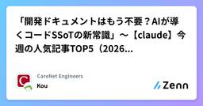

CareNet Engineersのフィード
https://zenn.dev/p/carenet
株式会社ケアネットのエンジニアブログです。CareNetサービスの技術情報を中心に記事を投稿しております。 各記事の内容は個人の意見であり、企業を代表するものではございません。
フィード

「開発ドキュメントはもう不要？AIが導くコードSSoTの新常識」～【claude】今週の人気記事TOP5（2026/03/15）
CareNet Engineersのフィード
!この記事はZennからclaudeのLike数が多い記事のリストを自動的取得し、AIを利用して要約し、自動更新されています。 「開発ドキュメントはもう不要？AIが導くコードSSoTの新常識」今週の人気記事TOP5（2026/03/15） 仕様駆動開発はやめた方がええ概要:AI時代の開発に実装ドキュメントは不要！本記事は、コードを唯一の真実（SSoT）とし、AIと新発想でドキュメント二重管理の課題を解決する、効率的な開発スタイルを提唱します。ポイント:コードをSSoTと徹底し、ドキュメント管理コストを劇的に削減する思想Claude等AIがコードから仕様を導き出す...
3日前

「AIが自動購入？UCPでEC-CUBEを未来対応させるべき理由」～【php】今週の人気記事TOP5（2026/03/15）
CareNet Engineersのフィード
!この記事はZennからphpのLike数が多い記事のリストを自動的取得し、AIを利用して要約し、自動更新されています。 「AIが自動購入？UCPでEC-CUBEを未来対応させるべき理由」今週の人気記事TOP5（2026/03/15） Copilot CLI に LSP の設定 (PHP/TS) を追加する概要:Copilot CLIでの開発をよりリッチにするため、LSP（Language Server Protocol）を統合する方法を紹介します。PHP/TypeScript環境でIDE並みの強力なリファクタリングや補完機能をCLIでも実現し、開発効率を飛躍的に向上さ...
13日前
「Vertex AI Search×GeminiでRAG革命！幻覚対策の3つの秘策」～【googlecloud】人気記事（03/15）
CareNet Engineersのフィード
!この記事はZennからgooglecloudのLike数が多い記事のリストを自動的取得し、AIを利用して要約し、自動更新されています。 「Vertex AI Search×GeminiでRAG革命！幻覚対策の3つの秘策」人気記事（03/15） 自分の結婚式でフォトコンテストLINEアプリを開発してセルフ余興をした話 & 結果報告概要:結婚式の余興で自作したLINEフォトコンテストアプリの全貌を公開！GoとGoogle Cloud、Momentoを活用し、AIスコアリング・高負荷対応・透明性を両立。個人開発ながら大規模サービス級の技術的工夫と運用結果が凝縮されて...
14日前
「Laravel開発が10倍速くなる？MixからViteへ移行しないと損する3つの理由」～【laravel】人気記事（2026/03/15）
CareNet Engineersのフィード
!この記事はZennからlaravelのLike数が多い記事のリストを自動的取得し、AIを利用して要約し、自動更新されています。 「Laravel開発が10倍速くなる？MixからViteへ移行しないと損する3つの理由」人気記事（2026/03/15） Webpack Mix から Vite へ - Laravel 8 プロジェクトをモダン化する段階移行概要:大規模Laravelプロジェクトのモダン化に挑むあなたへ。本記事は、既存Mixを残しつつVite/Vue3/TypeScriptを段階的に導入し、本番環境のリスクを最小限に抑えつつ開発体験を劇的に改善した実践アプロー...
16日前
「AIがバグを自動修正！開発速度が10倍になる新時代ワークフロー」～【ai】今週の人気記事TOP5（2026/03/15）
CareNet Engineersのフィード
!この記事はZennからaiのLike数が多い記事のリストを自動的取得し、AIを利用して要約し、自動更新されています。 「AIがバグを自動修正！開発速度が10倍になる新時代ワークフロー」今週の人気記事TOP5（2026/03/15） Anthropic公式が33ページのスキル設計書を出したので、将軍のスキルクリエイターと答え合わせしたら先を行ってた概要:Anthropic公式Claudeスキル設計ガイドと、実践的マルチエージェント「将軍」のスキル設計を徹底比較。公式を凌駕する独自知見と、実戦で鍛えられた設計の真髄がここに公開されます。ポイント:Claudeスキル設...
17日前
「AIエージェント×IaC自動化で、AWSインフラ構築が10倍速くなる新常識」～【aws】今週の人気記事TOP5（2026/03/15）
CareNet Engineersのフィード
!この記事はZennからawsのLike数が多い記事のリストを自動的取得し、AIを利用して要約し、自動更新されています。 「AIエージェント×IaC自動化で、AWSインフラ構築が10倍速くなる新常識」今週の人気記事TOP5（2026/03/15） Opus4.6でdraw.io図を生成したらもはやLLMの前提が崩れてた件概要:Claude Code (Opus 4.6)でdraw.io図を生成した結果、「LLMは複雑な構成図作成が苦手」という前提は完全に崩壊しました。最大27コンポーネント・48接続線でも、人間が整理したようなAWS構成図が実用的な品質で一発生成可能に。...
19日前
「LLMの「記憶喪失」問題解決！Pythonで感情と長期記憶を実装し対話質を爆上げ」～【python】人気記事（2026/03/15）
CareNet Engineersのフィード
!この記事はZennからpythonのLike数が多い記事のリストを自動的取得し、AIを利用して要約し、自動更新されています。 「LLMの「記憶喪失」問題解決！Pythonで感情と長期記憶を実装し対話質を爆上げ」人気記事（2026/03/15） LLMに長期記憶を実装する概要:LLMの短期記憶問題を克服！人間の脳の長期記憶メカニズムをPythonで実装し、文脈依存・動的に記憶を「再構成」するシステムで対話質向上。ポイント:脳の情動・忘却・連想プロセスをPython/SQLiteで再現。時間・気分で変化、再構成される「生きた記憶」実装。/sleepで記憶統合・抽...
20日前
汎用モデルで十分な気もするけどなぜ必要？医療特化AIモデルの現在地と実装戦略
CareNet Engineersのフィード
はじめにこんにちは！AI技術開発室のYTです。最近でもGPTやGemini、Claudeといった汎用LLMで大学入試共通テストの多くの科目で満点近い科目を叩き出したことが話題になりました。「もう全部汎用LLMでいいじゃん」――正直、そう思ってしまう空気も強いです。一方で、2026年1月に入りGoogleからMedGemma 1.5のアップデートが発表され、医療特化モデルの開発も続いています。本記事では、最新の医療特化AIモデルの現在地を整理し、汎用LLMが驚異的な能力を持つ中で、医療特化モデルはどのようなケースで有効なのか考えていきたいと思います。 1. 医療特化AIモデ...
24日前
【Cline CLI 2.0】VS Codeから飛び出したAIエージェントをGCP Vertex AI (Claude) で動かす
CareNet Engineersのフィード
はじめにこんにちは、Kouです。VS Codeの拡張機能としてお馴染みの自律型AI「Cline」。自分のチームでは、開発効率化のためにVS Code版のClineを導入しており、バックエンドには GCP Vertex AI（従量課金） を利用しています。月額固定のサブスクリプションではなく、使った分だけ支払うVertex AI経由でのClaudeモデル利用は、コストコントロールとパフォーマンスのバランスが良く、非常に重宝しています。今回は、先日メジャーアップデートされた Cline CLI 2.0 を、Vertex AI環境で構築した記録を残します。 概要以前からCL...
1ヶ月前
[2026年2月13日] Agent Teamsは人間の仕事を上位シフトさせるか？ (週刊AI)
CareNet Engineersのフィード
こんにちは、Kaiです。話題はAgent Teams一色といった様相です。先週のOpus4.6とGPT5.3Codexの発表、そしてAgent Teamsの普及に伴って、潮目が変わってきた雰囲気を感じています。これまではポジショントークも含めて、最先端のAI企業から「コーディングは終わる」というメッセージが出ていましたが、徐々に一般のソフトウェアエンジニアからも「これはもう、意識を変えないといけないかも」という声が出始めているように思います。個人的にも、ClaudeのAgent Teamsを使ってみて、業務としてのコーディングはいずれ消滅していくなという印象を強く持ちました。もちろ...
1ヶ月前
「PDF図表もRAG！Gemini 3 Proが常識を覆す情報活用術」～【googlecloud】人気記事TOP5（2026/02/22）
CareNet Engineersのフィード
!この記事はZennからgooglecloudのLike数が多い記事のリストを自動的取得し、AIを利用して要約し、自動更新されています。 「PDF図表もRAG！Gemini 3 Proが常識を覆す情報活用術」人気記事TOP5（2026/02/22） 複数エージェント協業で「続く健康習慣」を実現するAIコーチングアプリ「AIZAP」概要:マルチエージェント協業AIで「続く健康習慣」を実現する「AIZAP」が登場！Vertex AI Agent EngineとGoogle ADKを駆使し、従来の健康アプリの課題を解決する革新的なシステムアーキテクチャを詳解。ポイント:...
1ヶ月前
[2026年2月6日] ソフトウェアエンジニアリングという仕事の変質を感じる (週刊AI)
CareNet Engineersのフィード
こんにちは、Kaiです。また隔週になってしまいすみません。ちょうど今朝がた、GPT-5.3-CodexとClaude Opus 4.6が発表されました。双方ともベンチマークスコアは旧モデルを大幅に上回っているようですが、もはやここまでくるとモデルの性能差よりも、コードベースの作り方や、ドキュメントの整備状況、ワークフローの設計の方がずっと出力されるコード品質に効いてくるような気がしています。もちろん、AIオリエンテッドな洗練されたやり方を既に導入しているところでは、モデルの性能向上はシンプルに出来ることの拡大、速度の向上につながるでしょう。一方で、まだそこに至っていない場合には性能...
1ヶ月前
「【常識破壊】LivewireでCLI爆誕！次世代UXを最速構築する3つの秘訣」～【laravel】人気記事TOP5（2026/02/22）
CareNet Engineersのフィード
!この記事はZennからlaravelのLike数が多い記事のリストを自動的取得し、AIを利用して要約し、自動更新されています。 「【常識破壊】LivewireでCLI爆誕！次世代UXを最速構築する3つの秘訣」人気記事TOP5（2026/02/22） 「発想がイかれてる」と言われたコーポレートサイトを作った話概要:「発想がイカれてる」3モード（GUI/CLI/Designer）切り替え型コーポレートサイトの技術解説。Livewire中心に実現したユニークな体験と、実装で直面した深い知見が凝縮されています。ポイント:LivewireでCLIターミナルを実装し、URL...
1ヶ月前
「「現役エンジニアよ、気をつけろ！非エンジニアがAIでコードを爆速生成する時代」」～【ai】今週の人気記事TOP5（2026/02/22）
CareNet Engineersのフィード
!この記事はZennからaiのLike数が多い記事のリストを自動的取得し、AIを利用して要約し、自動更新されています。 「「現役エンジニアよ、気をつけろ！非エンジニアがAIでコードを爆速生成する時代」」今週の人気記事TOP5（2026/02/22） AIエージェント × knipで無駄コードを簡単に掃除概要:AIエージェントとknip連携で、JS/TSの不要コードを完全自動掃除！クリーンなコードベース維持とAIの自走力を高める実践ワークフロー。ポイント:knip導入・設定・不要コード検出・削除・テストをAIが自律化。指示一つで未使用コード/ファイル/パッケージを...
1ヶ月前
「Livewire 4の闇を攻略！SPA風開発で「イカれた」サイトを作る秘訣3選」～【php】今週の人気記事TOP5（2026/02/22）
CareNet Engineersのフィード
!この記事はZennからphpのLike数が多い記事のリストを自動的取得し、AIを利用して要約し、自動更新されています。 「Livewire 4の闇を攻略！SPA風開発で「イカれた」サイトを作る秘訣3選」今週の人気記事TOP5（2026/02/22） 「発想がイかれてる」と言われたコーポレートサイトを作った話概要:エンジニアを魅了する「発想がイかれてる」ハイブリッド型コーポレートサイト開発記。Livewire 4を核に、GUI/CLI/Designerモードを実現。体験追求の技術挑戦とLivewire「闇」を解説。ポイント:Livewire 4でCLIモードをPH...
2ヶ月前
「危険！AWSでAIエージェント暴走？5つの新ガードレールで安全運用」～【aws】今週の人気記事TOP5（2026/02/22）
CareNet Engineersのフィード
!この記事はZennからawsのLike数が多い記事のリストを自動的取得し、AIを利用して要約し、自動更新されています。 「危険！AWSでAIエージェント暴走？5つの新ガードレールで安全運用」今週の人気記事TOP5（2026/02/22） Amazonでの12年間を振り返る概要:AWSで12年、サポートからプリンシパルアーキテクトまで務めた著者が語る、Amazon流の巨大システム開発・運用の真髄。現場で培われた意思決定フレームワークや、グローバルなキャリアを切り拓く思考法が凝縮されています。ポイント:Customer ObsessionやDisagree and ...
2ヶ月前
「【Python】AIコードがあなたの仕事を奪う？知らなきゃ損する新常識」～【python】今週の人気記事TOP5（2026/02/22）
CareNet Engineersのフィード
!この記事はZennからpythonのLike数が多い記事のリストを自動的取得し、AIを利用して要約し、自動更新されています。 「【Python】AIコードがあなたの仕事を奪う？知らなきゃ損する新常識」今週の人気記事TOP5（2026/02/22） Qwen3-Swallow & GPT-OSS-Swallow概要:東京科学大学Swallow LLM ProjectがQwen3-SwallowとGPT-OSS-SwallowをApache-2.0でリリース。日本語・Reasoning能力を強化し、TopクラスLLMの性能を維持・凌駕する高精度モデル群を商用利用可...
2ヶ月前
[2026年1月23日] ダボス会議でもAGI/シンギュラリティが話題に (週刊AI)
CareNet Engineersのフィード
こんにちは、Kaiです。年明けからずっとバタバタしていますね……もう1月の終盤になっていることが信じられません。まさに「1月は行く、2月は逃げる、3月は去る」といった感じです。先日共通テストが実施され、ChatGPTが9科目で満点だったという報道がかなり話題になっていました。世間では驚きを持って受け止められたようですが、個人的には「そりゃそうでしょう」という印象です。むしろ全科目満点ではないことが驚きで、国語などでは解釈のブレの領域ではないかなと感じました。また、問題文が画像の場合マルチモーダル性能に引きずられるので、純粋に「知能」を測るという観点では割り引いて考えないといけません。...
2ヶ月前
「Cloud DNS、Analytics Hub、OpenTelemetryの進化に乗り遅れるな！」～【googlecloud】人気記事
CareNet Engineersのフィード
!この記事はZennからgooglecloudのLike数が多い記事のリストを自動的取得し、AIを利用して要約し、自動更新されています。 「Cloud DNS、Analytics Hub、OpenTelemetryの進化に乗り遅れるな！」人気記事 Google Cloudの名前解決機能解説！〜内部DNSからCloud DNSまで〜Google Cloudにおける名前解決は、デフォルトの「内部DNS」とマネージドサービス「Cloud DNS」を適切に使い分けることが重要です。内部DNSはVPC内のVM間通信を自動で行いますが、カスタマイズ性は限定的です。Cloud DNS...
2ヶ月前
[2026年1月9日] AGIに至るコーディングエージェント、そして (週刊AI)
CareNet Engineersのフィード
新年おめでとうございます、Kaiです。今年はひょっとすると週刊でお届けできないタイミングが増えるかもしれません。色々とバタバタしておりまして、隔週などになった際には申し訳ありません。さて、年初ですので2025年を軽く振り返りつつ、2026年を想像してみたいと思います。2025年はReasoningの年であり、コーディングエージェントの年でした。2024年末に発表されたo1 proやo3を契機に各社がReasoningに力を入れ、飛躍的に思考力が伸びました。そしてこれまでもClineやCursorはありましたが、Claude Codeを始めとするCLIと統合されたコーディングエージェ...
2ヶ月前